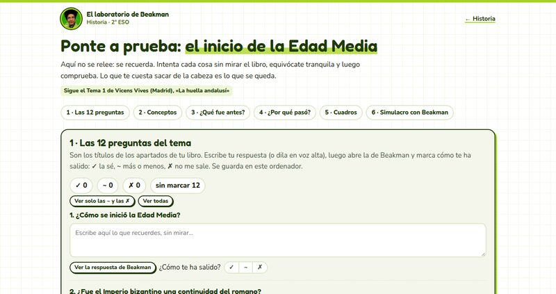
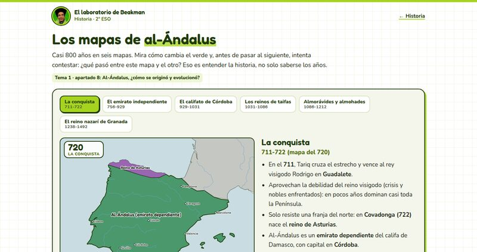
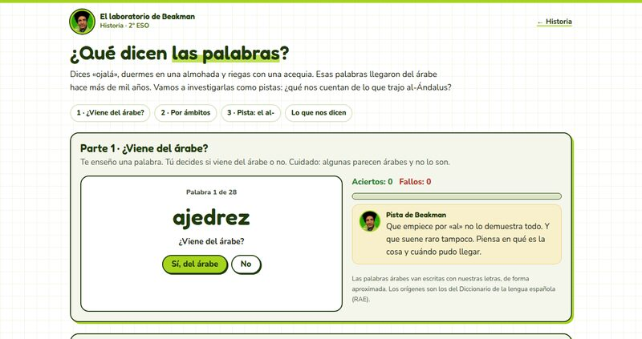
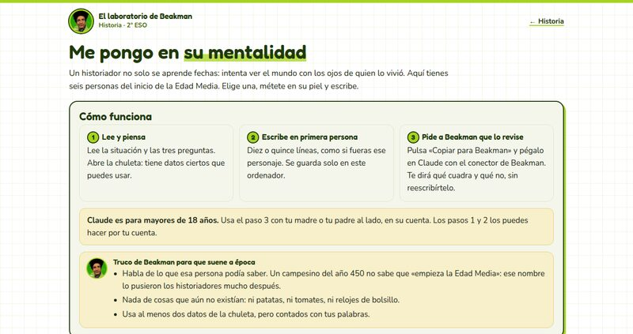
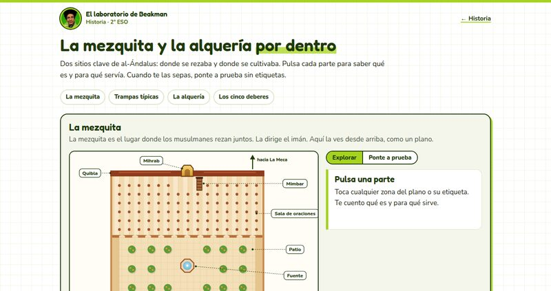
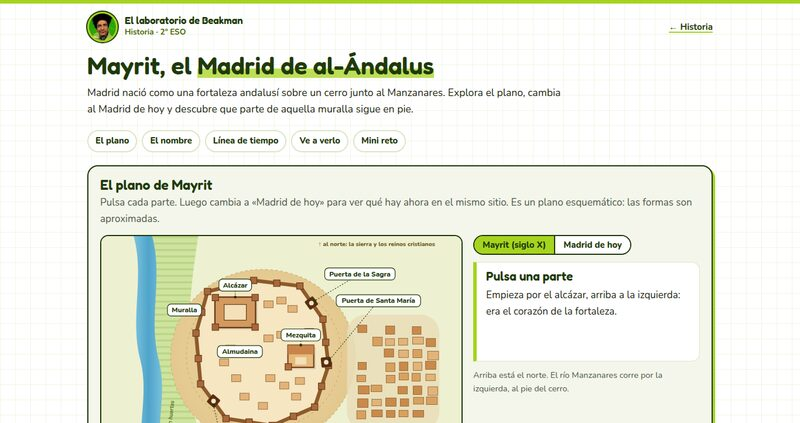
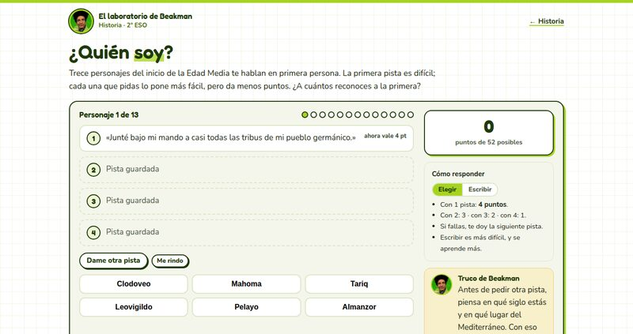
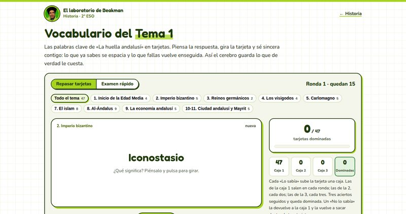
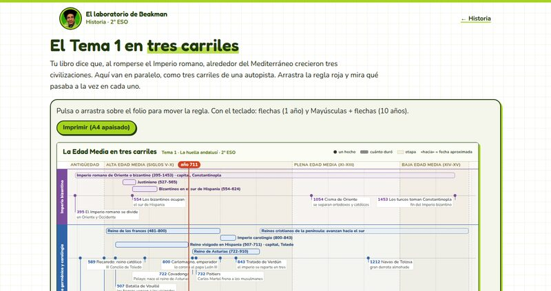

Historia
Cuándo y dónde, sí. Pero sobre todo por qué pasó, a quién le cambió la vida y qué queda hoy.
Empieza por aquí: los resúmenes
Cada tema en una lectura, contado como una cadena de qué provocó qué. Léelo antes de ponerte con los recursos.
Recursos para practicar
1º ESO
Todavía no hay recursos de 1º ESO. Están en el horno.
2º ESO

Ponte a prueba: el inicio de la Edad Media
Repaso para el examen: las 12 preguntas del tema, conceptos, ordenar los hechos, causas y cuadros para completar, con las respuestas de Beakman y un simulacro de examen para hacer con él en Claude.
- Para qué sirve
- Fijar el tema recordando sin mirar, que es lo que de verdad se queda, y saber qué partes faltan por repasar antes del examen.
- Cómo lo hace
- Práctica de recuperación: primero contestas tú y luego comparas. Marcas cada pregunta como sabida, a medias o no sabida, y vuelves solo a las que fallan. Sigue el Tema 1 de 2º de la Comunidad de Madrid.

Cronomapa de la Edad Media
Mueve la barra del 476 al 1492 y mira qué reinos, ciudades y batallas coincidieron en el tiempo. Cada acontecimiento cuenta qué cambió, al poco y a la larga.
- Para qué sirve
- Ver qué existía a la vez, que es lo que más cuesta de la Edad Media. Situar cada reino, ciudad y batalla en el mapa y en el tiempo, y entender cómo un acontecimiento lleva al siguiente.
- Cómo lo hace
- Aprender explorando: el tiempo lo mueves tú. En diez paradas Beakman te hace una pregunta para pensar antes de ver la pista. Cada acontecimiento explica sus consecuencias en la gente, la política, el arte y la cultura, y las palabras difíciles tienen su explicación al pasar el ratón.

Los mapas de al-Ándalus
Casi 800 años en seis mapas: la conquista, el emirato, el califato, los taifas, almorávides y almohades, y el reino nazarí de Granada.
- Para qué sirve
- Entender cómo se formó y cómo fue encogiendo al-Ándalus, y qué causas explican cada cambio.
- Cómo lo hace
- Antes de pasar de un mapa al siguiente, Beakman pregunta qué pasó entre los dos. Al final, un juego: reconocer cada etapa en un mapa sin nombres.

¿Qué dicen las palabras?
Un juego con las palabras que el español heredó del árabe: descubre cuáles vienen de al-Ándalus y cuáles solo lo parecen, clasifícalas por ámbitos y averigua por qué tantas empiezan por «al».
- Para qué sirve
- Resolver el reto del tema («¿Qué dicen las palabras sobre nuestro legado andalusí?») y saber explicar el legado de al-Ándalus: regadío y cultivos nuevos, comercio y ciencia.
- Cómo lo hace
- Tarjetas de sí o no con el origen de cada palabra, clasificación con corrección, un mini reto sobre el artículo «al» y la conclusión de Beakman.

Me pongo en su mentalidad
Seis personas del inicio de la Edad Media: un artesano que huye al campo, una comerciante de Constantinopla, un monje copista, una vecina de Toledo en el 711, un mercader del zoco de Córdoba y una campesina de una alquería. Elige una y escribe en su piel.
- Para qué sirve
- Practicar la actividad «Me pongo en su mentalidad» del libro: usar datos ciertos de la época para imaginar qué veía, qué temía y qué le importaba a alguien que vivió entonces.
- Cómo lo hace
- Situación, tres preguntas guía y una chuleta de datos; el texto se guarda en el ordenador y un botón lo copia para que Beakman lo revise en Claude, con una persona adulta al lado.

La mezquita y la alquería por dentro
Dos dibujos para pulsar: las partes de una mezquita (minarete, patio, fuente, sala de oraciones, quibla, mihrab y mimbar) y las de una alquería de regadío (rueda hidráulica, noria, acequias, alberca, huertos…). Con los cinco deberes del musulmán.
- Para qué sirve
- Reconocer cada parte de la mezquita y de la alquería y saber para qué servía, sin confundir la quibla con el mihrab.
- Cómo lo hace
- Primero exploras: pulsas cada parte y lees qué es. Después, en «Ponte a prueba», se ocultan las etiquetas y tienes que encontrar cada parte. Y tres trampas típicas del examen.

Mayrit, el Madrid de al-Ándalus
Un plano para pulsar de la fortaleza andalusí que dio origen a Madrid, con una capa que superpone el Madrid de hoy, una línea de tiempo y un paseo por lo que queda.
- Para qué sirve
- Saber quién fundó Mayrit, para qué y cómo era, y reconocer en el Madrid de hoy dónde estaban el alcázar, la muralla y la mezquita.
- Cómo lo hace
- Exploras el plano parte a parte, cambias a «Madrid de hoy» para comparar, repasas la línea de tiempo y terminas con un mini reto de cinco preguntas con corrección.

¿Quién soy?
Trece personajes del inicio de la Edad Media te hablan en primera persona: de Rómulo Augústulo a Almanzor. Adivina quién es con el menor número de pistas.
- Para qué sirve
- Poner cara, fecha y lugar a los protagonistas del tema y entender por qué importa cada uno: quién cerró el Imperio de Occidente, quién unió a visigodos e hispanorromanos, quién creó el emirato y el califato.
- Cómo lo hace
- Pistas de la más difícil a la más fácil: cuantas menos uses, más puntos. Eliges entre opciones o escribes el nombre. Al acertar ves su ficha y al final repites solo los que fallaste.

Vocabulario del Tema 1
Las 47 palabras clave del tema en tarjetas que giran: de Mare Nostrum y basileus a taifa, alquería y Mayrit, con su definición y un ejemplo.
- Para qué sirve
- Saber definir con tus palabras los términos que caen en el examen, apartado por apartado, y llegar al día del examen con todos dominados.
- Cómo lo hace
- Repaso espaciado con cajas: lo que sabes sale cada vez menos y lo que fallas vuelve enseguida. Filtro por apartado, contador de dominadas y un examen rápido en el que escribes la definición y la comparas.

El Tema 1 en tres carriles
Una línea del tiempo del 400 al 1500 con tres carriles en paralelo: Imperio bizantino, Europa germánica y carolingia, y el islam y al-Ándalus. Cabe en un folio para imprimir.
- Para qué sirve
- Ver qué pasaba a la vez en las tres civilizaciones del Mediterráneo, que es lo que más cuesta del tema, y situar cada fecha clave en su etapa.
- Cómo lo hace
- Una regla que mueves tú corta los tres carriles y te cuenta qué existía en ese año y qué pasó cerca. En papel, un A4 apaisado para tenerlo delante al estudiar.